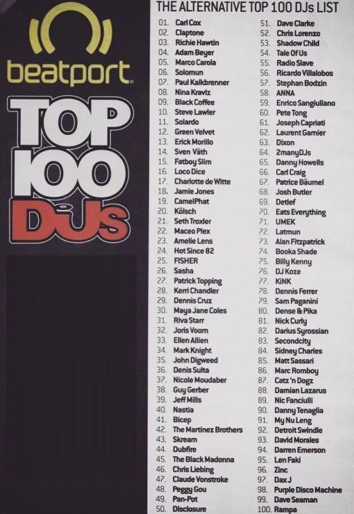

Finalmente el Top 100 de Djs alternativos,impulsado por Beatport: La lista se genera combinando los datos de la votación de los 100 mejores DJs junto con los datos de ventas de techno y house de la tienda en linea especializada en musica
electronica: Beatport, la cual es la más grande del mundo. El resultado, como vimos el año pasado, es una lista muy diferente, con solo unos pocos artistas cruzando la lista insignia de los 100 mejores DJ.
El año pasado, el ícono del techno Carl Cox encabezó la lista:
¿pero quién tomará el lugar este año?
Puedes leer el desglose completo de la encuesta del año pasado aquí y mantenerte al día con toda la acción de los 100 mejores DJ alternativos a continuación:
